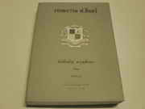
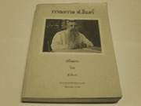
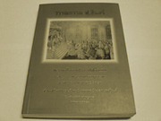

ฟ.ฮีแลร์
เป็นชาวต่างชาติที่มีความสามารถทางภาษาไทย มีบุคคลที่กล่าวถึงเรื่องนี้หลายคน อาทิเช่น
สุกิจ นิมมานเหมินทร์(2496;19-23) กล่าวถึงฟ.ฮีแลร์ว่า
|
" ข้าพเจ้าเป็นศิษย์คนหนึ่งที่นิยมสำนวนโวหารภาษาไทยของคุณครู ฟ.ฮีแลร์มากเพราะถึงจะเป็นคนฝรั่งเศสก็ตาม
ถ้าจะพูดถึงรสของภาษาแล้ว ข้าพเจ้าเชื่อว่าท่านชำนาญในภาษาไทยมากเท่าๆกับภาษาฝรั่งเศสอันเป็นภาษาแม่ของท่านหรือมากกว่าอีกก็เป็นได้...
ข้าพเจ้าจำบทกวีนิพนธ์โคลงกระทู้ของครูฮีแลร์บทหนึ่งซึ่งจำได้ว่าเขียนไม่น้อยกว่า
25 ปีมาแล้วดังนี้
ได้ไม่ดี ถี่ล้วน ตามคาด ดีไม่ได้ สัญชาติ ฉุดรั้ง
ไทยใช่หรั่ง
ยังฟาด ฟุตฟิต กันนอ หรั่งใช่ไทย
ลองหมั้ง แต่งกระทู้เทียมไทย
เมื่อบราเดอร์ฮีแลร์เป็นฝรั่งแต่งได้อย่างนี้
จึงทำให้เราเกิดมีมานะขึ้นมาพยายามแต่งกันเพราะฉะนั้นไปที่ไหนมาที่ไหนคนถึงแปลกใจว่า
เหตุใด นักเรียนอัสสัมชัญจึงมีความรู้ทางกาพย์ดีกว่าโรงเรียนรัฐบาลไทยจัดตั้งขึ้นเสียอีก
" |
ในด้านความสามารถทางภาษาของฟ.ฮีแลร์
นั้นเป็นที่เลื่องลือมาก สุลักษณ์ ศิวรักษ์ (2513:163) กล่าวว่า
|
" อนึ่งฝีปากในการแต่งหนังสือนั้น
ท่านขึ้นชื่อลือชามาตั้งแต่รัชกาลที่ 6 แล้วด้วยเหตุฉะนี้ เมื่อตั้งวรรณคดีสมาคมขึ้นในรัชกาลที่
7 สมเด็จกรมพระยาดำรงฯ จึงโปรดให้เชิญท่านเจษฎาจารย์เข้าไปเป็นสมาชิกด้วย
ดูเหมือนจะเป็นฝรั่งคนเดียวที่เป็นสมาชิกแห่งสมาคมอันมีเกียรติยิ่งนี้
"
|
ระยะต่อมาการเรียนภาษาไทยในโรงเรียนอัสสัมชัญก็ไม่ดีเด่นเท่าเดิมดังที่
พระยาศราภัยพิพัฒน์ (2496 :7-9) กล่าวว่า
|
"
เมื่อเปรียบชั้นมัธยม 6 ด้วยกันแล้ว ภาษาต่างประเทศเด็กรุ่นข้าพเจ้าดีกว่า
แต่ภาษาไทยแพ้เด็กรุ่นตั้งแต่ 30 ปีที่แล้วอย่างหลุดลุ่ยทีเดียว ดังกาพย์
โคลงที่ปรากฏอยู่ในอุโฆษสมัย ซึ่งความเจริญในอักษรศาสตร์ไทยนี้ ต้องยกให้เป็นเกียรติแก่เจษฎาจารย์ฮีแลร์ที่ได้พร่ำสอนมาด้วยตัวเอง "
|
จากการศึกษาต้นฉบับลายมือและหนังสือเก่าส่วนตัวของ
ฟ.ฮีแลร์ ในห้องสมุดโรงเรียนอัสสัมชัญ พบว่าฟ.ฮีแลร์ มีความพยายามศึกษาภาษาไทยอย่างมาก
สังเกตจากหนังสือที่เป็นลายมือต้นฉบับ เช่น หนังสือมงคลทีปนี ที่พยายามแปลภาษาไทย-บาลี-สันสกฤตเป็นภาษาฝรั่งเศส
ทีละหน้า หน้าต่อหน้า ถ้าพบคำที่มีไวพจน์ก็จะเพิ่มภาษาไทยแทรกเข้าด้วย เช่น คำว่าจิตบริสุทธิ์
แทรกเพิ่มว่า ประภัสสร เป็นต้น
ฟ.ฮีแลร์
เป็นนักอ่านนักค้นคว้า ก่อนที่จะบรรลุเรื่องราวใดๆลงไปในหนังสือ ที่เขียนหรือแต่ง
จะศึกษาจนแน่ใจว่าเป็นข้อมูลที่น่าเชื่อถือ ตัวอย่างเช่น เรื่อง ราชทูตไทยไปเมืองจีน
เรื่องเจ้าพระยาวิชาเยนทร์ เป็นต้น ท่านได้เขียนจดหมายสอบถามและโต้ตอบแสดงความคิดเห็น
กับ ก.ศ.ร.กุหลาบ ก็ได้ตอบไป ดังตัวอย่างจดหมายต่อไปนี้ (มนันยา ธนะภูมิ. 2539:60,106-109)
|
" ...ด้วยข้าพเจ้ามีความดีใจเหลือเกินที่ท่านอาจารย์ได้เมตตาเอื้อเฟื้อ
ส่งหนังสือคำให้การขุนหลวงหาวัดต้นประดู่(เจ้าฟ้าอุทุมพร)มาให้ข้าพเจ้ายืมอ่าน
...
1. ส่วนปัญหาพระเจ้าช้างเผือกตกเป็นเชลยของมอญนั้น
ข้าพเจ้าออกเชื่อแน่ว่าเป็นจริง ได้อ่านเรื่องนี้ในหนังสือหลายฉบับเป็นต้นในหนังสือ
กงซุลหรือทูตปตุเกษ โบราณซึ่งไปเจริญราชไมตรีประจำอยู่เมืองพม่าเป็นหลายปี
ลืมชื่อหมดแล้ว
2. ขุนหลวงหาวัด
ข้าพเจ้าติดใจจริง เวลานี้กำลังคัดลอกวุ่นอยู่...
3. พงษาวดารมอญพม่าซึ่งท่านอาจารย์ว่าจะให้อ่านนั้น
เป็นเล่มสมุดกะดาษข่อยสำนวนผิดกันกับราชาธิราช.... "
|
ผลงานด้านวรรณกรรม
ฟ.ฮีแลร์ ได้เขียนวรรณกรรมหลายประเภท ได้แก่ ประเภทหนังสือเรียน ประเภทวรรณกรรมปกิณกะและเรื่องแปล
ดังรายละเอียดต่อไปนี้
|

|
|

|
|

|
"ดรุณศึกษา"
เป็นตำราเรียนภาษาไทยที่เจษฎาจารย์ ฟ. ฮีแลร์
ได้เรียบเรียงขึ้นเอง ภายหลังที่ได้เข้ามาอยู่ในประเทศไทย และดูแลกิจการของโรงเรียนอัสสัมชัญเพียง
9 ปี แสดงให้เห็นว่าท่านสนใจศึกษาภาษาไทยเป็นอย่างมาก จนสามารถแต่งตำราเรียนเป็นภาษาไทยได้
รวม 3 เล่ม ได้แก่ ดรุณศึกษาตอน กอ ขอ ดรุณศึกษาตอน กลาง และดรุณศึกษาตอน ปลาย
more details
|
ปกิณกะ
เป็นชุดที่รวบรวมวรรณกรรมของท่านเจษฎาจารย์
ฟ.ฮีแลร์ ในชุด เบ็ดเตล็ด ประกอบด้วย เรื่องแปล บทความ สารคดี เรื่องสั้น ตลอดจนคำประพันธ์ชนิดต่างๆ
ส่วนใหญ่จะลงพิมพ์ในหนังสือ อัสสัมชัญอุโฆษสมัย ซึ่งท่านเป็นบรรณาธิการภาคไทย
พิมพ์ตั้งแต่ ค.ศ. 1913 ถึง ค.ศ. 1941 ออกปีละ 4 เล่ม ท่านมีความสนุกกับอุโฆษสมัย
เขียนทั้ง ร้อยแก้ว ร้อยกรองลงเนืองๆ
more
details
|
โกศาปานไปฝรั่งเศส
ดังได้ทราบมาว่า เรื่อง โกศาปานไปฝรั่งเศส นี้ท่านเจษฏาจารย์ ฟ.ฮีแลร์ ได้รับเกียรติสูงสุด
ด้วยว่าท่านเป็นผู้ที่ได้รับความไว้วางพระทัยจาก สมเด็จฯกรมพระยาดำรงราชานุภาพ
ซึ่งเวลานั้นท่านทรงดำรงตำแหน่งราชบัณฑิตยสภา ให้เป็นผู้แปลและเก็บความขึ้นเรียบเรียงใหม่เมื่อ
พ.ศ. 2461 การที่ท่านได้รับเกียรติสูงสุดให้เป็นผู้แปลและเรียบเรียงเรื่อง
โกษาปานไปฝรั่งเศส นั้นเป็นความภาคภูมิใจและเชิดชูโรงเรียนอัสสัมชัญ ทั้งครูบาอาจารย์และศิษย์ตลอดจนเยาวชนอัสสัมชัญ
โดยเฉพาะอย่างยิ่งคณะนักบวชเซนต์คาเบรียลแห่งประเทศไทย
more details
|